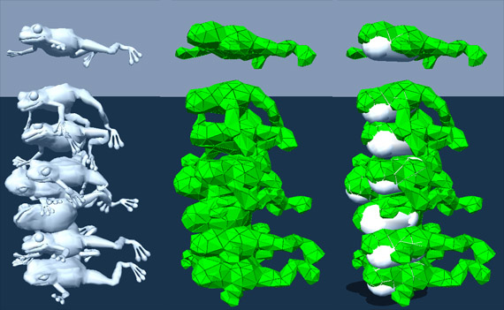

void attachVertexToGlobalPosition(const NxU32 vertexId, const NxVec3 &pos);
Soft body particles can be attached to fixed points specified in the global frame. The vertexId identifies the soft body particle to attach to the global position. The id corresponds to the index into the vertex position array passed to the API when cooking the soft body mesh, or, equivalently, the index of the vertex position as returned in the vertex position user buffer. The user may also attach vertices that get created during the tearing process.
A useful method for obtaining a vertex ID, for example when dragging with
a mouse, is to cast a ray against the soft body. See Other Soft body Features for more information.
void attachVertexToShape(NxU32 vertexId, const NxShape *shape, const NxVec3 &localPos, NxU32 attachmentFlags);Soft bodies can be attached to rigid body shapes in much the same way as attaching the soft body to a global position. But instead of specifying the global position, the position is relative to the shape (i.e., a position in the shape's coordinate frame). As the shape moves, this position will change in the global frame, pulling the soft body with it.
NOTE: Care should be taken if objects with small masses (either through low density or small volume) are attached, as the simulation may easily become unstable. The NxSoftBodyDesc.attachmentResponseCoefficient field should be used to lower the magnitude of the impulse transfer from the soft body to the attached rigid body in such a situation. Other workarounds are simply increasing the density of the object or adding linear and angular damping to it.
void attachToCollidingShapes(NxU32 attachmentFlags);
void attachToShape(const NxShape *shape, NxU32 attachmentFlags);
Since intermesh collisions are not supported, two soft bodies may freely penetrate each other. As a useful and fast workaround for this problem, rigid bodies can be used as cores inside soft bodies. As skeletons, they also give the soft body a firm interior and improve the global rubbery behavior of soft bodies. As an example, see the pile of frogs above. On the left you see the frog triangle meshes. The middle image shows the tetrahedral meshes used for simulation and on the right, the rigid cores are shown. In this case, capsules were used.
attachToCollidingShapes() attaches to any rigid body shape in the scene.
attachToShape() is less indiscriminate and only attaches to a specified
shape. attachmentFlags behaves in a similar way to the attachmentFlags
parameter of attachVertexToShape().
It should be noted that this method of attachment will not work with general
triangle meshes because the inside/outside of a general triangle mesh is not
defined.
void detachFromShape(const NxShape *shape);
void freeVertex(const NxU32 vertexId);
Soft body particles can be detached as well as attached. detachFromShape() finds all the soft body particles that are attached to a particular shape and detaches them. freeVertex() detaches a specific vertex. The same vertex index that was used to attach a position or shape can be used again with attachVertexToGlobalPosition() or attachVertexToShape().
When attaching a soft body to an actor the attachment can be flagged as tearable using NX_SOFTBODY_ATTACHMENT_TEARABLE, this allows the soft body to break the attachment if a sufficient force is applied to the attachment.
In fact the attachment is broken when the stretching constraint attached to the object exceeds a certain factor of its rest length. This factor is specified using:
NxSoftBodyDesc::attachmentTearFactor
void NxSoftBody::setAttachmentTearFactor(NxReal factor) ;
NxReal NxSoftBody::getAttachmentTearFactor();
The default is 1.5 so breakable attachments break when the constraint is stretched 50% more than its rest length.